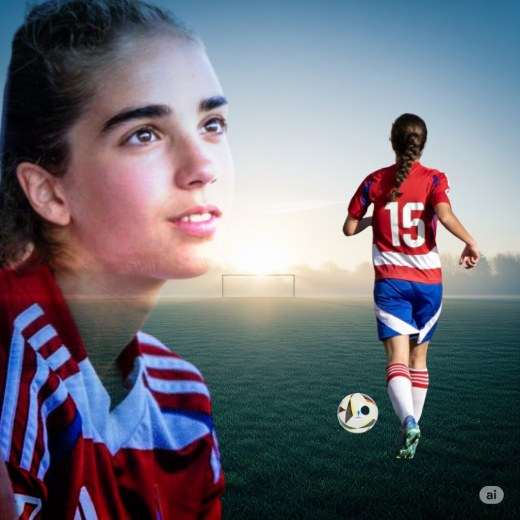

La historia de Cayetana Encinas desde sus primeros pasos hasta convertirse en capitana
Con tan solo 7 años, Cayetana comenzó su viaje futbolístico en su escuela local.
Seleccionada como una de las capitanas de su equipo provincial.
Rozando el sueño de representar a Andalucía, un paso muy importante en su carrera.

Cayetana Encinas es una joven promesa del fútbol femenino español. Con esfuerzo, pasión y mucho corazón, ha crecido como jugadora y como persona. Este blog sigue su historia y sus sueños.